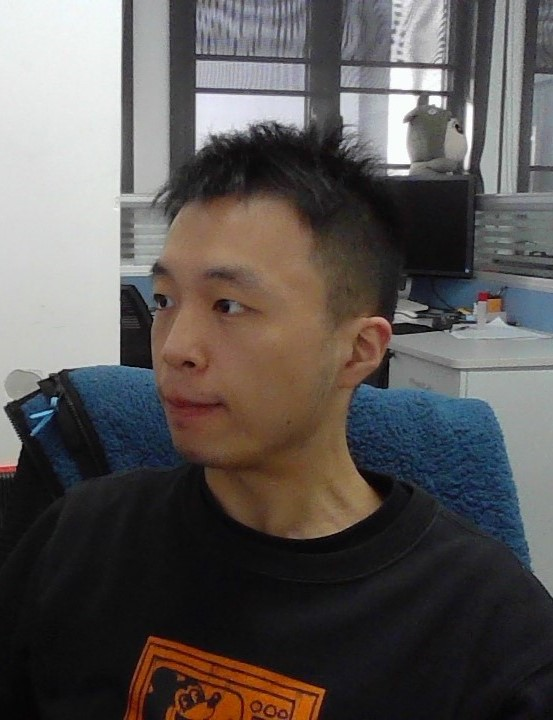
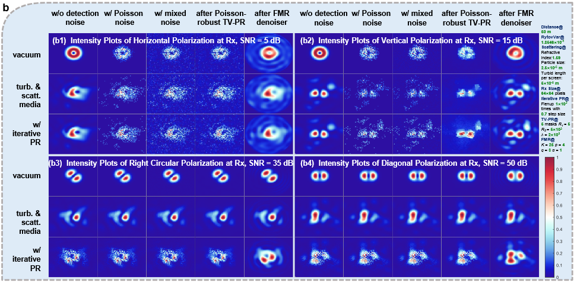
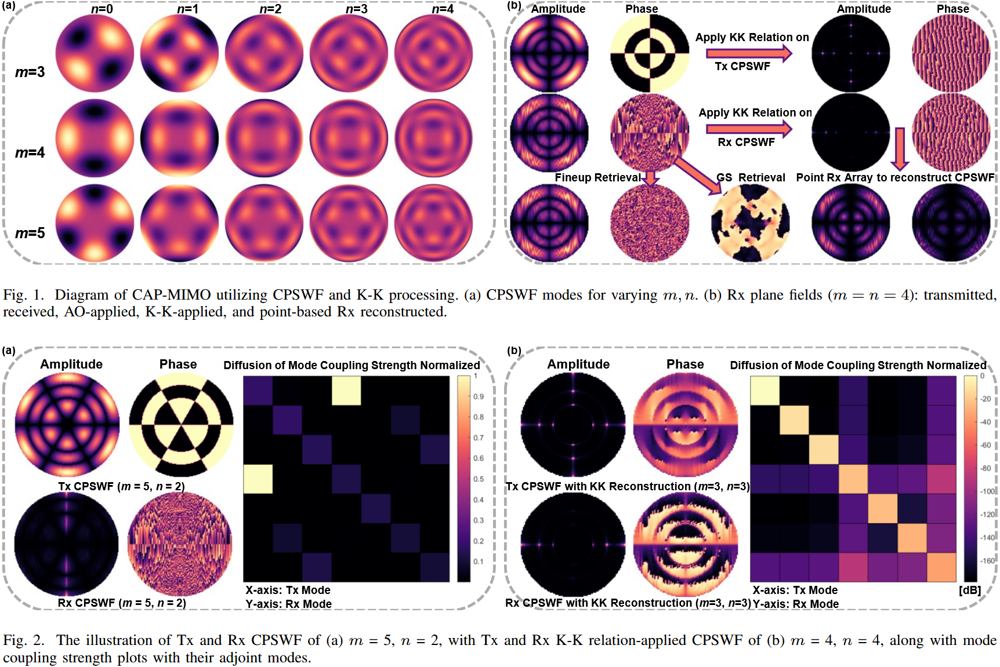
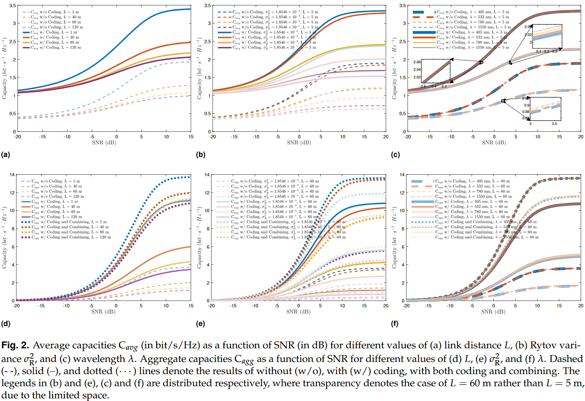

|
Weijie Dai 戴炜杰
I am a PhD student at Tsinghua SIGS, advised by Prof. Yuhan Dong.
I work on optical turbulence, free-space optics, and optical wireless communications.
Previously, I received my M.E. from the same department and my B.S. from University of Electronic Science and Technology of China (UESTC).
Before my M.E., I spent a year as a Research Assistant at UESTC working on electron field emission, advised by Prof. Kangcheng Qi and Prof. Xiaoju Wang.
Please feel free to contact me if you are interested in my research.
Email |
Homepage |
Research |
Misc
|

|
News
[Jan 2026] I became a Science Writer for the Chinese Laser Press, hoping to write stories about the optics community for a wider audience. Really grateful to the editors for giving me this chance!
[May 2025] I passed my M.E. thesis defense. I appreciate my advisor for long-term supports.
[Dec 2024] I was invited to serve as the TPC member of IEEE ICC'25 Wireless Communications Symposium. I appreciate the symposium chair for picking!
|
Research
My research keywords include:
- Free-space optical (FSO) communications, light detection and ranging (LiDAR)
- Wavefront engineering in optics and electromagnetism
- Optical turbulence and scattering phenomena
Below is a selected list of published documents.
See Google Scholar or ResearchGate for the full list and PDFs.
|
|

|
Vectorial Optical Wireless Communications: Bridging Optical Physics and Engineering for 6G and Beyond
Dai W, Dong Y, Wei T, Guan X, Liu Z, Song J
npj Wirel. Technol., vol. 2, no. 1, p. 11, 2026
TL; DR: Perspective on vectorial free-space optics for OWC with case study.
DOI: 10.1038/s44459-025-00018-7
|
|
|

|
Achieving Full Spatial Degrees of Freedom: Wavefront Reconstruction for Continuous Aperture MIMO Communications
Dai W, Su X, Zhang L, Wei T, Liu Z, Song J, Dong Y
IEEE Trans. Veh. Technol., in press, 2025
TL; DR: Wavefront engineering in holographic MIMO.
DOI: 10.1109/tvt.2025.3627784
|
|
|

|
Free-Space Optical Communication based on Augmentation of OAM Modes
Dai W, Su X, Liu X, Zhang L, Wei T, Song J, Dong Y
Study on Optical Communications, vol. 51, no. 4, p. 250021, 2025. [Invited, In Chinese]
TL; DR: Passive manipulation of asymmetric OAM spectra.
DOI: 10.13756/j.gtxyj.2025.250021
|
Conference Proceedings & Abstracts
-
Topological Illumination for Enhanced Optical Turbulence Tomography
Dai W, Wei T, Hu C, Zhang L, Song J, Dong Y.
Proc. SPIE O+P'26, 2026.
-
Self-Imaging and Enhanced Detection of Topologically Structured Light
Dai W, Wei T, Hu C, Zhang L, Song J, Dong Y.
Proc. SPIE O+P'26, 2026.
-
Reconstruction of Volumetric Catastrophe Skeletons in Underwater Caustics
Dai W, Zhang L, Wei T, Hu C, Song J, Dong Y.
Proc. SPIE O+P'26, 2026.
-
Optical Turbulence Tomography via Optimal Transport
Dai W, Su X, Wei T, Zhang L, Song J, Dong Y.
Proc. SPIE O+P'25, 2025.
-
Optical Skyrmions for Wireless Communications
Dai W, Su X, Wei T, Zhang L, Song J, Dong Y.
Proc. SPIE O+P'25, 2025.
-
Ray-Tracing Modeling of Coherent Free-Space Optical Links
Dai W, Hu C, Su X, Wei T, Song J, Dong Y.
Proc. SPIE O+P'25, 2025.
-
OAM Spectral Asymmetry Identification and Symbol-Level Detection in Twisted Partially Coherent FSO Links
Dai W, Liu X, Su X, Guan X, Song J, Dong Y.
Proc. Frontiers in Optics + Laser Science (FiO, LS), 2024.
-
Concurrence Modulation and Direct Detection Free-Space Optical Communication Systems under General Stokes Detection Noise
Dai W, Liu X, Su X, Guan X, Song J, Dong Y.
Proc. Frontiers in Optics + Laser Science (FiO, LS), 2024.
-
On Arbitrary Turbulent Fading in OAM based Underwater Free-Space Optical Links
Dai W, Liu X, Tang S, Zhang L, Tang X, Song J, Dong Y.
Proc. Pacific Rim Conf. Lasers Electro-Optics (CLEO-PR), 2024.
-
Availability of Twisted Partially Coherent Beams in Underwater Free-Space Optical Links
Dai W, Zhang Y, Liu X, Zhang L, Tang X, Song J, Dong Y.
Proc. Pacific Rim Conf. Lasers Electro-Optics (CLEO-PR), 2024.
-
Optimal Mode for Continuous Aperture MIMO based Holographic Communications
Dai W, Zhang Y, Zhang L, Tang X, Song J, Dong Y.
Proc. IEEE Int. Conf. Commun. Workshops (ICC Wkshps), 2024.
-
Scintillation Index of Plane and Spherical Laser Beams Propagating in Arbitrary Oceanic Turbulence
Dai W, Zhang L, Lin J, Wu K, Wei T, Zhao Z, Tang X, Song J, Zhang X-P, Dong Y.
Proc. Photonics Electromagn. Res. Symp. (PIERS), 2024.
-
On Propagation of OAM Modes Carried by Partially Coherent Laguerre-Gaussian Beams in Weak Oceanic Turbulence with Wide Range Parameters
Dai W, Liao Y, Zhang Y, Dong Y.
Proc. Asia Commun. Photonics Conf. (ACP), 2023.
|
Miscellanea
Teaching
- Course Assistant, Biology, Medicine and Informatics Experiments (Rotation I), Tsinghua SIGS, Spring 2026.
- Teaching Assistant, Information and Communication Technology, Tsinghua SIGS, Spring 2026.
- Teaching Assistant, Modern Information Network and Technologies, Tsinghua SIGS, Fall 2025.
- Teaching Assistant, Wireless Communication Engineering, Tsinghua SIGS, Fall 2023.
Honors
- Finalist & Third Prize, Inaugural Graduate Forum on Optical Communications, CICT State Key Lab of OCTN, Nov 2025.
- Outstanding Graduates of Beijing, Beijing Municipal Commission of Education, Apr 2025.
- Professional Practice Excellence Scholarship, Tsinghua SIGS, Apr 2025.
- Excellent Comprehensive Scholarship of the School, Tsinghua SIGS, Nov 2024 & 2023.
- Rank 2/31 in Graduate Entrance Examination, Dept Electronic Engineering, Tsinghua University, Apr 2022.
Services
- TPC Membership: OPAL'25.
- TPC Reviewer: IACOP'24, OPAL'25-'26, IEEE ICC Wkshps'26.
|
|